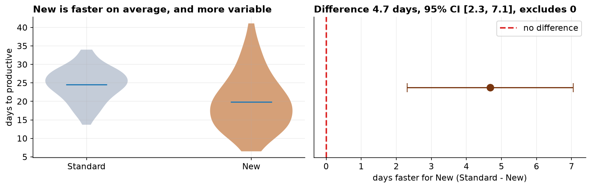
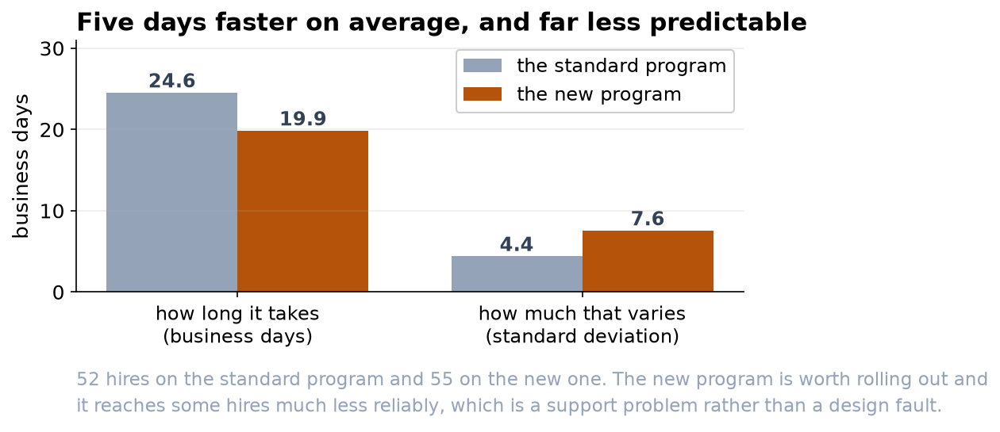

New Onboarding: Faster, But Less Consistent
The redesigned program gets hires productive about five days sooner, with a caveat worth planning around.
Recommendation
Roll the new onboarding program out, and pair it with support for the hires it does not reach. In our pilot, hires on the new program became productive about five days sooner than those on the old one, a real and worthwhile gain. The catch is that the new program is less consistent: it helps most people a lot, but a minority take as long as before or longer. Adopt it, and add a check-in for anyone still ramping past the old program's typical window, so the wider spread does not leave slower hires behind.
What we found
We compared time-to-productive for two groups of new hires, 52 on the Standard program and 55 on the New one. The Standard group took about 24.6 business days on average; the New group took about 19.9, roughly five days faster. That gap is well beyond what chance would produce, and we are 95 percent confident the true saving is between 2 and 7 days per hire. In short, the new program genuinely speeds people up.


The part not to overlook
The average hides an important pattern: the new program's results are far more spread out. Its most common outcome is excellent, but its slowest hires take as long as the old program, or longer. For workforce planning that unpredictability is a real cost, and it is why the recommendation includes a safety net for slower starters rather than a simple 'switch and move on.'
Why the numbers can be trusted
The raw file needed cleaning first. The program labels had been entered inconsistently (different capitalization and stray spaces), which we standardized before anything else; we then removed two duplicate rows, three blank times, and three impossible entries (a zero, a negative, and a 999 placeholder), leaving 107 clean records. We confirmed each group was close enough to a normal distribution to test, and we checked whether the two groups were equally spread. They were not, so we used the version of the t-test (Welch's) that allows for that, rather than the one that assumes equal spread. A second test that makes no such assumptions gave the same answer.
Before you act
Two cautions. First, treat the groups as comparable only if hires were assigned to the two programs in similar mix, same departments, same hiring window; if the new program happened to go to one team, the gap could partly be that team. Second, the whole comparison rests on a consistent definition of 'productive,' so make sure managers apply that bar the same way across both groups. With those confirmed, the new program is the better default, run with an eye on its slower hires.